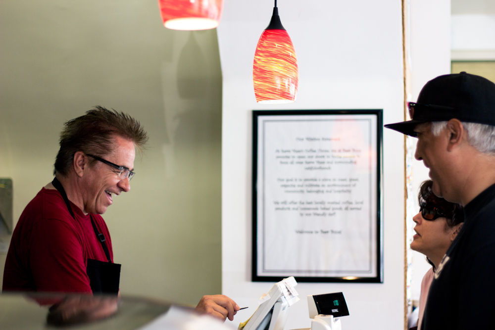
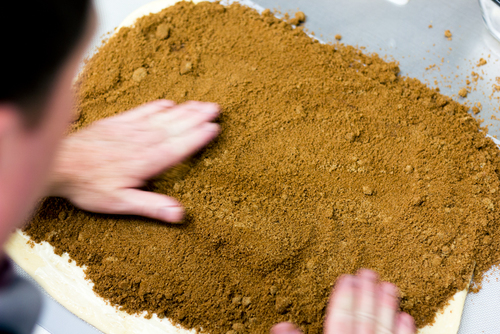
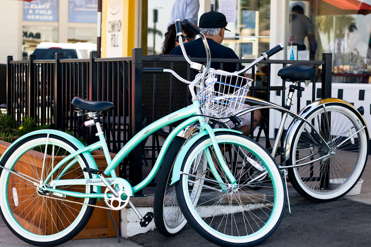

Bear Buns Bakery & Cafe
Check Out Our Buns
Adress here

ABOUT US
As Serra Mesa’s coffeehouse, we open our doors and invite our neighbors to come in and enjoy our yummy, home-baked goodies.
Our goal is to provide a warm and inviting gathering place to cultivate community. We offer the best locally roasted organic coffee, homemade baked goods, and other local products all served by our friendly staff.
Try our famous cinnamon rolls and customer-favorite bread pudding. We offer delicious smoothies in addition to our specialty teas and drinks including espresso, frappes and chai tea.
We are family-owned, operated, and supported. That's right – we strive to make all our customers feel like family.
What sets us apart from the rest? Quality ingredients and an extra dose of love that will keep you coming back for seconds. Enjoy!

